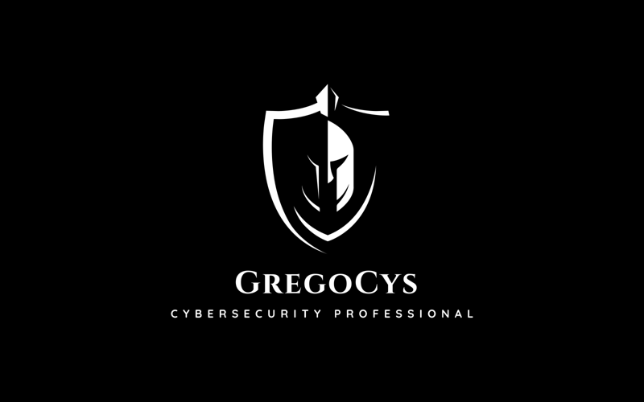

Enterprise controls
Endpoint hardening, application control, browser baselines, identity controls, and cloud security policy.
I’m Brandon Scott Gregory, a Cybersecurity Engineer focused on enterprise identity and endpoint security, security operations, and technical investigation. I graduated from SANS Technology Institute with a Bachelor of Science in Applied Cybersecurity. My research includes Windows reverse engineering, vulnerability analysis, and reproducible lab investigations.

scope: authorized environments method: observe → reproduce → verify output: evidence-driven reports
Work spanning identity controls, endpoint policy, incident triage, and reverse engineering.
Endpoint hardening, application control, browser baselines, identity controls, and cloud security policy.
Microsoft Sentinel investigation workflows, authentication telemetry, KQL, and incident resolution documentation.
Windows PE analysis, x64dbg, Ghidra, file-format analysis, crash triage, and binary patch validation.
Examples of identity-policy planning, application-control troubleshooting, and incident investigation.
Plan report-only observation, pilot exclusions and readiness validation for stronger identity protection.
Conditional Access · Device-bound sessions · pilot designRead the engineering case studyValidate enforceable application controls and benchmark-aligned browser settings while addressing compatibility.
AppLocker · Intune · Group Policy · CISRead the engineering case studyCorrelate identity and endpoint signals, investigate context, and document supported incident dispositions.
Microsoft Sentinel · Defender · KQLRead the engineering case studyTwo controlled binary-analysis exercises showing how the results were investigated and checked.
Recovered the activation algorithm and validated a one-byte branch patch (JNE → JMP) on a controlled exercise.
Completed · Controlled labExplore projectDiagnosed an access violation, identified an unchecked copy loop, and verified a 26-byte hotfix with five regression tests.
Completed · Controlled labExplore projectI earned a Bachelor of Science in Applied Cybersecurity from SANS Technology Institute. My GIAC certifications and additional credentials are linked for verification.
For professional opportunities, collaboration, or a technical discussion, email me directly.